PoseAug: A Differentiable Pose Augmentation Framework for 3D Human PoseEstimation
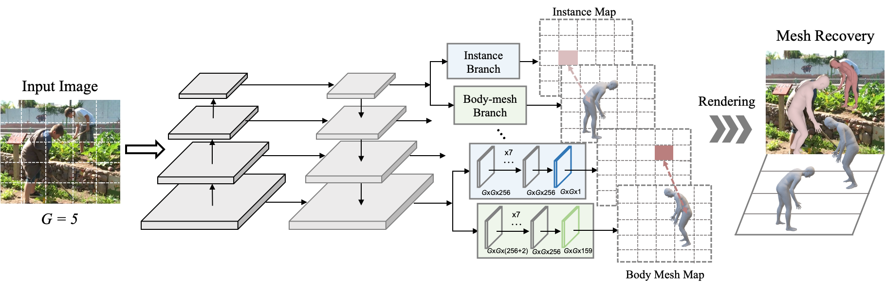

Abstract
Existing 3D human pose estimators suffer poor generalization performance to new datasets, largely due to the limited diversity of 2D-3D pose pairs in the training data. To address this problem, we present PoseAug, a new auto-augmentation framework that learns to augment the available training poses towards a greater diversity and thus improve generalizablility of the trained 2D-to-3D pose estimator. Specifically, PoseAug introduces a novel pose augmentor that learns to adjust various geometry factors (e.g., posture, body size, view point and position) of a pose through differentiable operations. With such differentiable capacity, the augmentor can be jointly optimized with the 3D pose estimator and take the estimation error as feedback to generate more diverse and harder poses in an online manner. Moreover, PoseAug introduces a novel part-aware Kinematic Chain Space for evaluating local joint-angle plausibility and develops a discriminative module accordingly to ensure the plausibility of the augmented poses. These elaborate designs enable PoseAug to generate more diverse yet plausible poses than existing offline augmentation methods, and thus yield better generalization of the pose estimator. PoseAug is generic and easy to be applied to various 3D pose estimators. Extensive experiments demonstrate that PoseAug brings clear improvements on both intra-scenario and cross-scenario datasets. Notably, it achieves 88.6% 3D PCK on MPI-INF-3DHP under cross-dataset evaluation setup, improving upon the previous best data augmentation method by 9.1%.
Video
Overview
First, we penalize interpenetrations among the reconstructed people using a distance field-based loss. This loss function requires no additional annotations and encourages the network to regress meshes that do not overlap with each other.
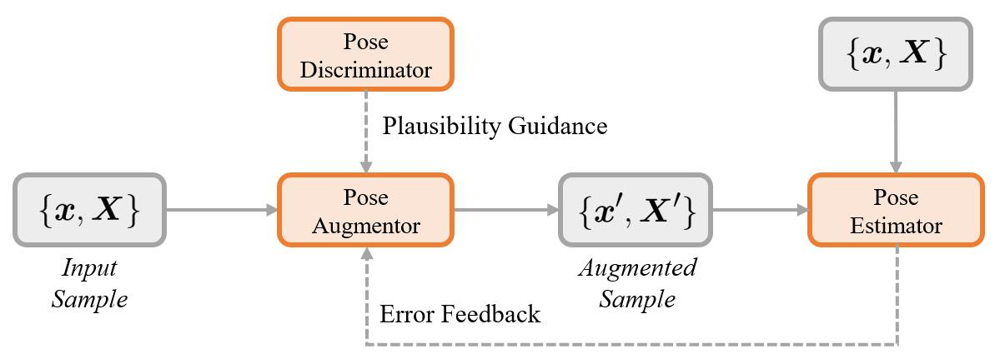
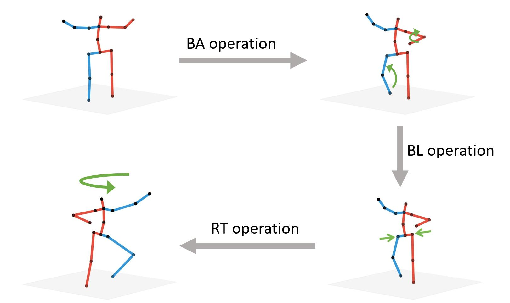
Second, we leverage available instance segmentation annotations and apply a depth ordering-aware loss that promotes the reconstruction of a scene whose rendering is consistent with the annotations.
First, we penalize interpenetrations among the reconstructed people using a distance field-based loss. This loss function requires no additional annotations and encourages the network to regress meshes that do not overlap with each other.
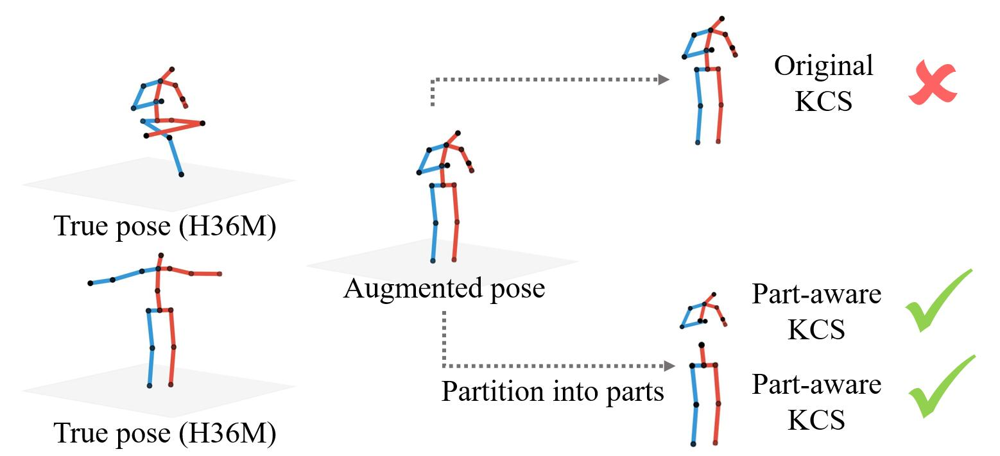
Main results
Here we compare our method to naive regression approach that was trained without our geometric losses. Our method is able to predict the correct ordinal depth and avoid mesh collisions.
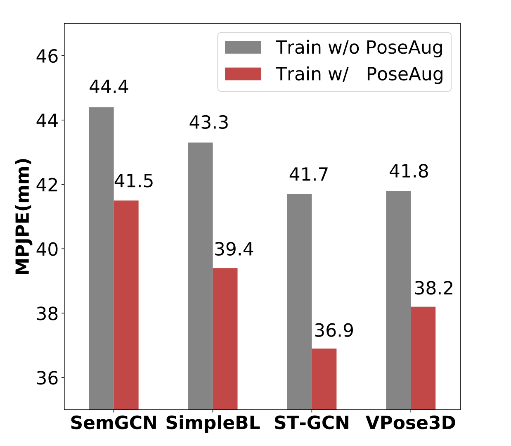
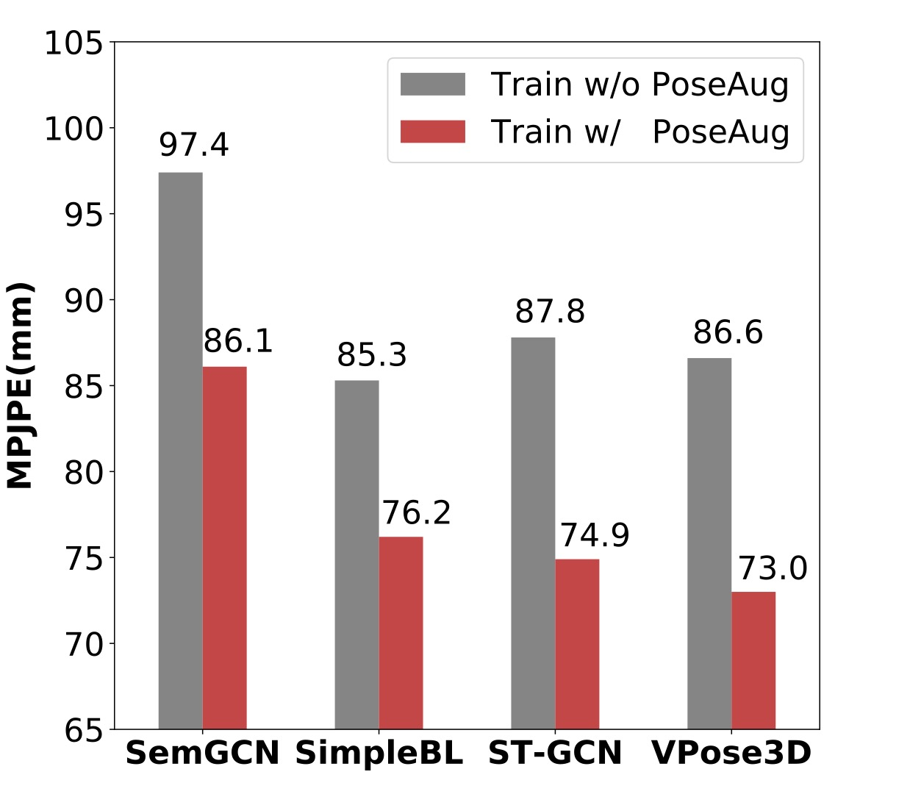
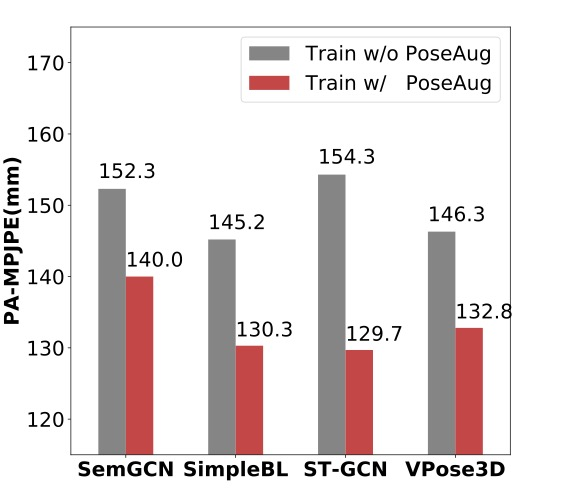
Limited traing data setting
Here we compare our method to naive regression approach that was trained without our geometric losses. Our method is able to predict the correct ordinal depth and avoid mesh collisions.
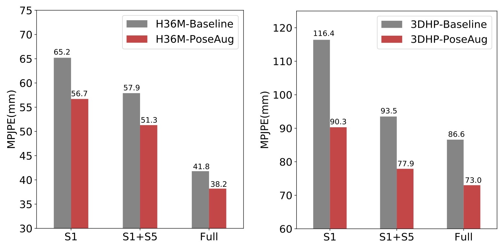
Diversity improvements
Here we compare our method to naive regression approach that was trained without our geometric losses. Our method is able to predict the correct ordinal depth and avoid mesh collisions.
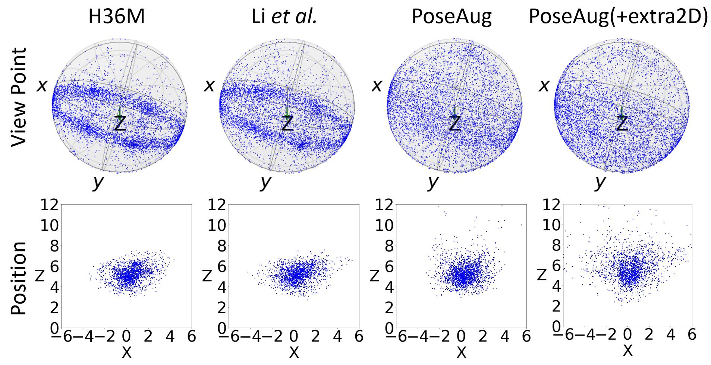
Quatitative results
Here we compare our method to naive regression approach that was trained without our geometric losses. Our method is able to predict the correct ordinal depth and avoid mesh collisions.
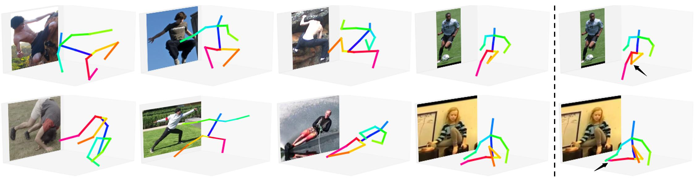
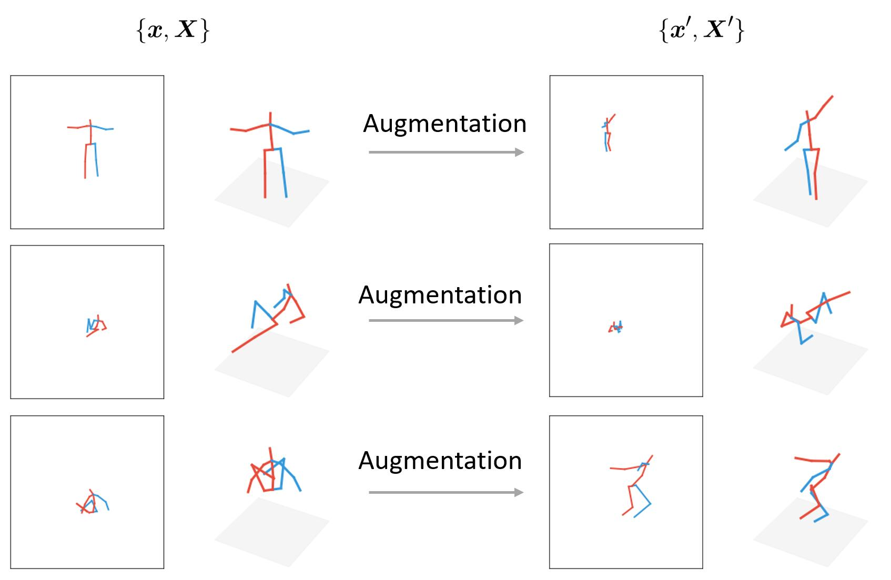
Acknowledgements
This research was partially supported by AISG-100E-2019-035, MOE2017-T2-2-151, NUS_ECRA_FY17_P08 and CRP20-2017-0006. JZ would like to acknowledge the support of NVIDIA AI Tech Center (NVAITC) to this research project.
The design of this project page was based on this website.